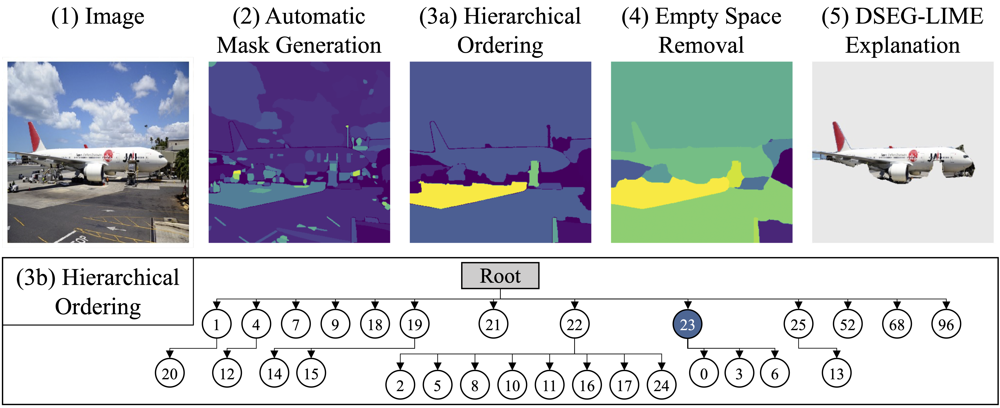
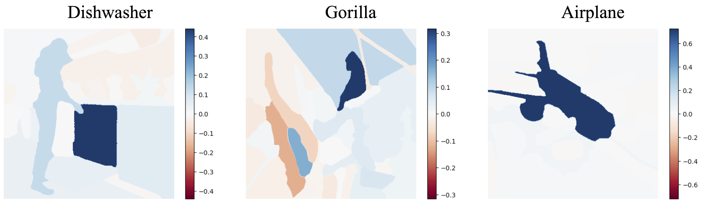
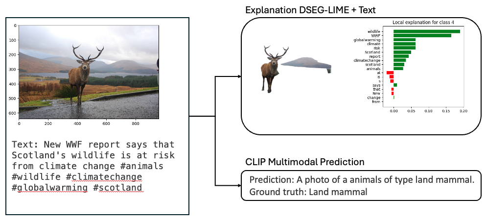
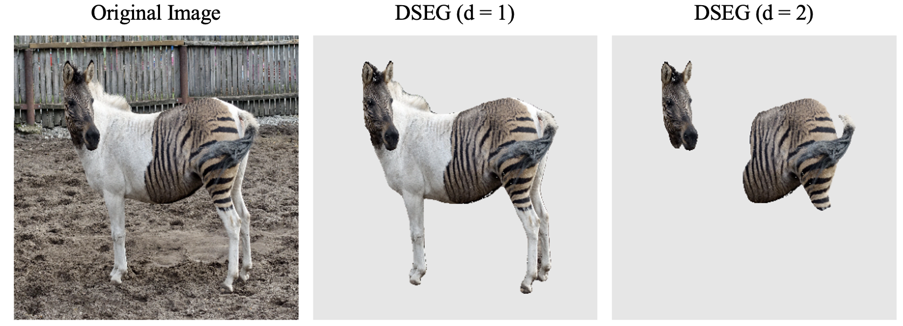

Abstract
LIME (Local Interpretable Model-agnostic Explanations) is a popular XAI framework for unraveling decision-making processes in vision machine-learning models. The technique utilizes image segmentation methods to identify fixed regions for calculating feature importance scores as explanations. Therefore, poor segmentation can weaken the explanation and reduce the importance of segments, ultimately affecting the overall clarity of interpretation. To address these challenges, we introduce the DSEG-LIME (Data-Driven Segmentation LIME) framework, featuring: i) a data-driven segmentation for human-recognized feature generation by foundation model integration, and ii) a user-steered granularity in the hierarchical segmentation procedure through composition. Our findings demonstrate that DSEG outperforms on several XAI metrics on pre-trained ImageNet models and improves the alignment of explanations with human-recognized concepts.
Core Technologies
-
🔍 Foundation Models
SAM, DETR
-
🧠 Base Models
EfficientNet, ResNet, ViT, ConvNext, CLIP
-
🎯 Applications
XAI, Vision, Concept Hierarchy
Key Features
Data-Driven Segmentation
Advanced feature generation aligned with human recognition patterns using foundation models
-
🔍 SAM (Segment Anything)
Precise object segmentation
-
🎯 DETR Object Detection
End-to-end object recognition
Feature extraction and semantic segmentation
Hierarchical Approach
User-steered granularity in the segmentation procedure through composition
-
🌟 ConvNeXt Integration
Modern architecture support
-
🔮 ResNet Backbone
Robust feature hierarchy
Multi-level feature analysis and composition
Improved Interpretability
Enhanced alignment with human-recognized concepts and better XAI metrics
-
👁️ VisionTransformer Support
Attention-based analysis
-
🎯 CLIP Zero-shot Analysis
Cross-modal understanding
Human-aligned explanations and explanation for zero-shot predictions
DSEG-LIME Technique
Algorithm 1: DSEG-LIME Framework
Key Implementation Details
- • Hierarchical segmentation with depth control (\(d\))
- • Adaptive feature selection based on parent importance
- • Integration with any black-box model (\(f\)) and interpretable model (\(g\))
Evaluation Setup
Methodology
Model Architecture
🧠 Primary Models
EfficientNet (B4)
Core architecture for evaluations
ResNet-101
Feature extraction backbone
👁️ Advanced Models
VisionTransformer-384
Self-attention mechanisms
ConvNeXt
Modern CNN architecture
Foundation Models
-
🔍 Segment Anything (SAM)
State-of-the-art segmentation model for precise object boundary detection
-
🎯 DETR
End-to-End object detection with transformers
-
🎯 CLIP
Zero-shot visual-language understanding and classification
Segmentation Methods
DSEG (Ours)
Data-driven hierarchical segmentation with SAM
SLIC
Superpixel segmentation
Quickshift
Mode-seeking segmentation
Felzenszwalb
Graph-based segmentation
Watershed
Marker-based segmentation
Evaluation Framework
Comprehensive evaluation across multiple dimensions:
- • Correctness (Random Model, Random Explanation, Single Deletion)
- • Output Completeness (Preservation and Deletion)
- • Consistency (Noise Preservation and Deletion)
- • Contrastivity (Preservation and Deletion)
- • Performance Metrics (Gini Index, Stability, Computation Time)
Quantitative Results
Our comprehensive evaluation demonstrates DSEG-LIME's superior performance across multiple metrics:
Performance Metrics
Gini Index
Best score (DSEG-GLIME)
Stability
Best repetition stability score
Random Model
Highest correctness score
Detailed Evaluation Results
| Metric Category | DSEG Score | Performance |
|---|---|---|
| Random Model Correctness | 74% | Highest among all methods |
| Random Explanation | 93% | Best performance (DSEG-GLIME) |
| Single Deletion | 64% | Significantly outperforms other methods |
| Deletion Score | 74% | Consistent across SLIME, GLIME, and BayLIME variants |
| Noise Preservation | 77% | Best consistency score (DSEG-GLIME/BayLIME) |
Key Findings
- ✓ Superior performance in correctness metrics
- ✓ Best-in-class stability (0.010)
- ✓ Highest Gini index (0.54) with GLIME variant
- ✓ Consistent high performance across all LIME variants
- ✓ Balanced computation time (28.5-31.9s)
Qualitative Results
Our comprehensive user study with 87 participants evaluated the quality and interpretability of explanations across different segmentation methods:
User Study Results
| Method | Avg. Score ↑ | Best Rated ↑ |
|---|---|---|
| DSEG | 4.16 | 1042 |
| SLIC | 3.01 | 150 |
| Quickshift | 1.99 | 90 |
| Felzenszwalb | 3.25 | 253 |
| Watershed | 2.59 | 205 |
Note: Average scores are on a scale of 1-5, with 5 being the best. Best Rated shows the number of times each method was rated highest.
Key Findings
- 📈 Highest Average Score: DSEG achieved 4.16/5, significantly outperforming other methods
- 🏆 Most Preferred: DSEG was rated best 1042 times, over 4x more than the next best method
- 📊 Consistent Performance: DSEG maintained superior ratings across different image types and scenarios
- 🎯 User Satisfaction: Participants particularly appreciated DSEG's alignment with human-recognized features
Example Explanations
Feature Attribution Heatmaps
DSEG-LIME generates precise feature attribution heatmaps for different object classes. The examples above show attribution maps for a dishwasher, gorilla, and airplane, where darker blue regions indicate stronger positive contributions to the model's decision. This demonstrates DSEG-LIME's ability to identify semantically meaningful regions that influence the model's predictions.
Multimodal Analysis & Zero-Shot Classification
DSEG-LIME's capability to integrate both visual and textual information for comprehensive explanations, showcasing its versatility in zero-shot classification scenarios using CLIP. The example demonstrates analysis of a deer image with associated text about wildlife conservation, where CLIP successfully identifies the image as a "land mammal" without prior training on this specific category. The bar chart shows feature importance scores that incorporate both visual elements and textual context, highlighting terms like "wildlife" and "climate" that influence the model's predictions. This demonstrates DSEG-LIME's ability to explain zero-shot predictions by leveraging CLIP's multimodal understanding.
Granularity Control
Demonstration of DSEG-LIME's user-controlled granularity: The original image (left) is analyzed at different hierarchical depths. At d=1, the explanation captures major features, while at d=2, it provides finer-grained segmentation focusing on more specific regions like the head and striped pattern. This flexibility allows users to choose the level of detail in explanations.
Quick Start
Get started with DSEG-LIME using our interactive notebook: